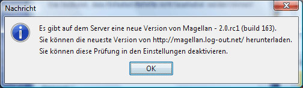

System
Hier können einige globale Systemeinstellungen gesetzt werden.

-
Spracheinstellungen
Hier kann man die verwendete Sprache für die Magellan-Oberfläche und
die Befehle einstellen. Die Änderung wird aus technischen Gründen erst
nach einem Neustart von Magellan wirksam.
-
Tempeinheiten
Hier kann man das Verhalten von Magellan bei der Erstellung vom
Tempeinheiten festlegen. Ist in dem Feld Startwert ein
Wert eingetragen, so nummeriert Magellan alle erzeugten Tempeinheiten
mit dieser Nummer beginnend durch, entweder Dezimal oder im Base36
System, je nach gewählter Einstellung neben dem Kasten. Dies ist z.B.
in einem Bündnis sinnvoll, in dem jeder Spieler einen reservierten
Nummernbereich für Tempeinheiten zugewiesen bekommen hat, damit nicht
Tempeinheiten mit gleichen Nummern in einer Region erzeugt
werden.
Ist die Option Bei Temperzeugung Dialog anzeigen gewählt, wird
beim Erstellen von Tempeinheiten ein zusätzliches Fenster eingeblendet,
in dem einige Einstellungen vorgenommen werden können.
-
Beim Start auf neuere Version prüfen.
Ist diese Option gewählt, überprüft Magellan beim Start, ob inzwischen
eine neue Version von Magellan zum Download bereitliegt. Dazu wird eine
Verbindung zum Internet benötigt. Falls eine neue Version vorhanden
ist, wird beim Start folgender Dialog angezeigt:

https://magellan2.github.io
ist dabei die aktuelle Entwickler-Website.
-
Lade beim Stard den letzten Report
Hiermit regelt man, ob beim Start von Magellan der zuletzt geladene
Report in Magellan geladen wird.
-
Lade Regionen Leere an, wo Regionen fehlen
Ist diese Option gesetzt, so werden unbekannte Regionen mit einem
Fragezeichen versehen.
-
Fortschrittsanzeige
Wenn man diese Option aktiviert, so wird im Titelbereich des
Magellanfenstern der prozentuale Fortschritt angezeigt, d.h. die Anzahl
der schon bestätigten Einheiten.

-
Look&Feel
Hier kann man das Look&Feel der Magellan-Oberfläche auswählen.
Standardmäßig stehen hier bereits eine Reihe von Look&Feels zur
Verfügung.
-
CDE/Motif
-
Kunststoff
-
Liquird LnF
-
Metal
-
Metouia (sf)
-
PGs LnF
-
Plastic (JGoodies)
-
Plastic 3D (JGoodies)
-
Plastic XP (JGoodies)
-
SH Farr
-
Squereness
-
Tiny LnF
-
Windows
-
Windows XP
Zusätzlich kann Magellan auch mit so genannten Skins versehen werden.
Dafür benötigt man so genannte Themepacks, die in das Unterverzeichnis
'skins' gelegt werden müssen. (Wenn z.B. magellan.jar im Verzeichnis
C:\magellan\ liegt, dann muss skinlf.jar auch in das Verzeichnis
C:\magellan\ und z.B. das Themepack whistlertheme.zip in das
Verzeichnis C:\magellan\skins\). Passende Themepacks findet man unter
www.mylookandfeel.com.
-
Schriftgröße
Hier kann man die relative Größe der Systemschrift einstellen. Die
Änderung wird aus technischen Gründen erst nach einem Neustart von
Magellan wirksam.
-
Griffe an oberster Baumebene anzeigen
Damit ist gemeint, dass man den obersten Baumknoten ebenfalls noch
sieht und so den Baum komplett noch zusammenklappen kann.

-
Datei-History
Der hier eingetragene Wert bestimmt, wieviele zuletzt geladene Reports
im Datei-Menü erscheinen.

-
Namensgenerator
Wenn man diese Option aktiviert und dazu eine Textdatei einbindet, in
der zeilenweise Namen aufgeführt sind, so kann man diese bei der
Erstellung neuer Einheiten auswählen.

-
Textkodierung
Hier kann man festlegen, wie Magellan die Reports und Befehle kodiert.
Es gibt prinzipiell drei Kodierungsformen.
-
System - ist die Kodierung des Systems und entspricht meist einer
Abwandlung von ISO 8859-1.
-
ISO-8859-1 - ist das Standardformat für die meisten Dateien im
mitteleuropischen Raum
-
UTF-8 - ist die Zukunft.
Wir empfehlen sehr, alle Reports und Befehle in UTF-8 zu kodieren. Der
Eressea Server unterstützt dies mittlerweile durchgehend. Einzig einige
wenige Tools haben damit ein Problem.

-
Zeilenumbruch
Aktiviert man die Option Aktiviere Zeilenumbruch, so werden die
Nachrichten, die zu lang für die Breite des Nachrichtenfensters sind,
umgebrochen. Es entsteht also kein horizontaler Scrollbalken.
-
Farben
Hier kann man für die verschienen Nachrichtentypen verschiedene
Hintergrundfarben definieren und so für Aufmerksamkeit sorgen.
Standardmäßig ist die Hintergrundfarbe weiß.